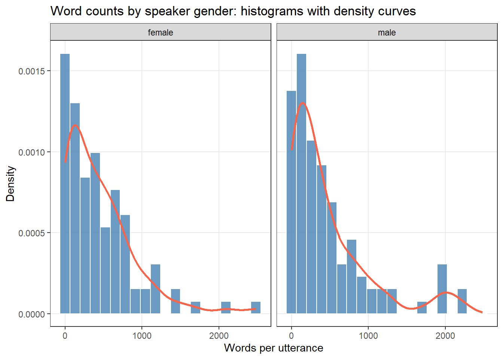
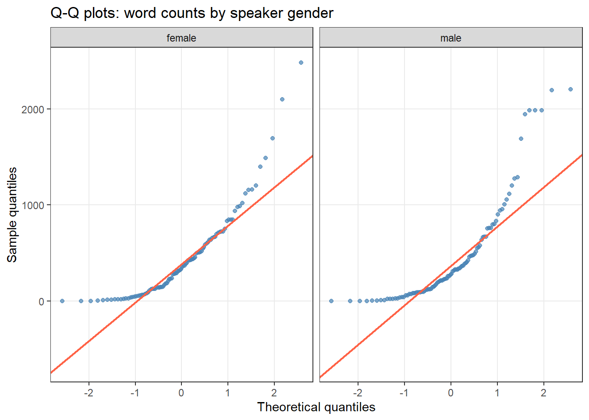
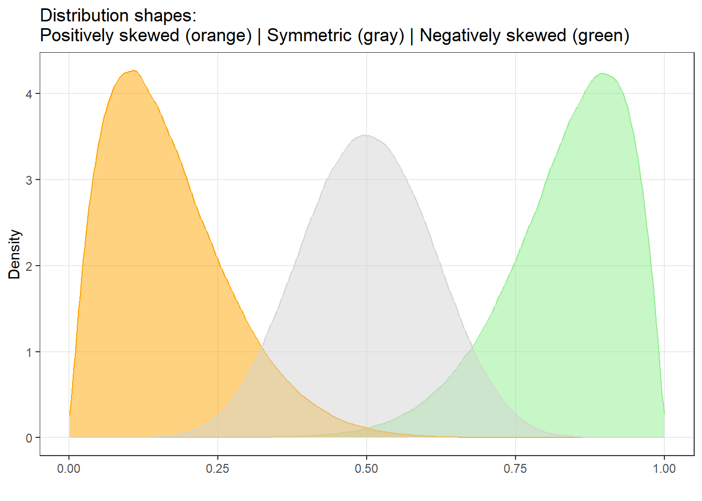
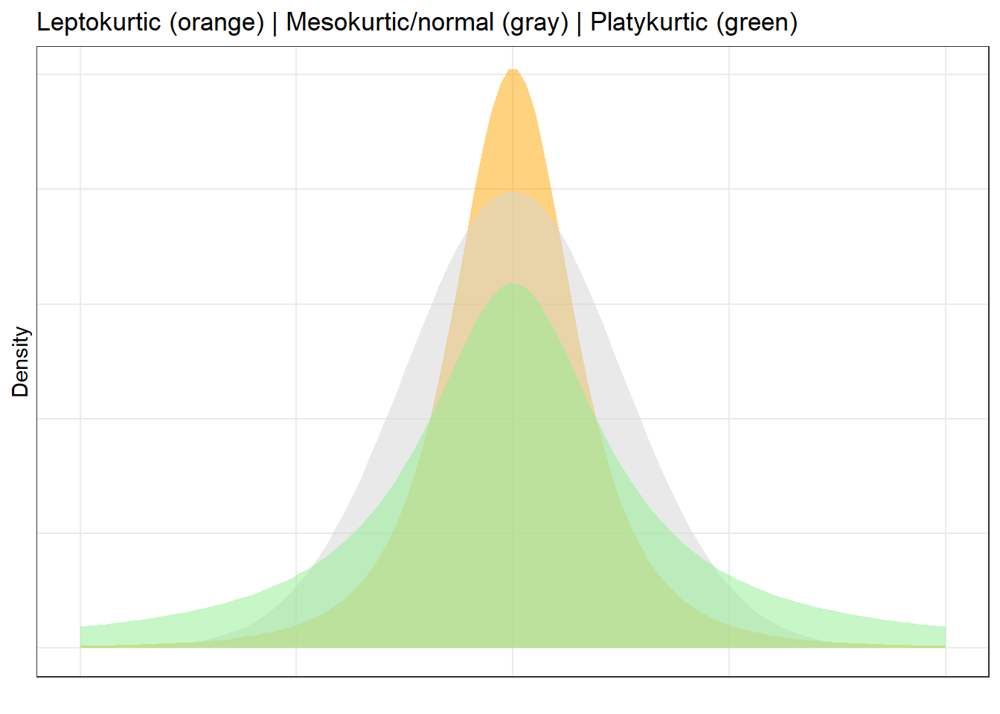
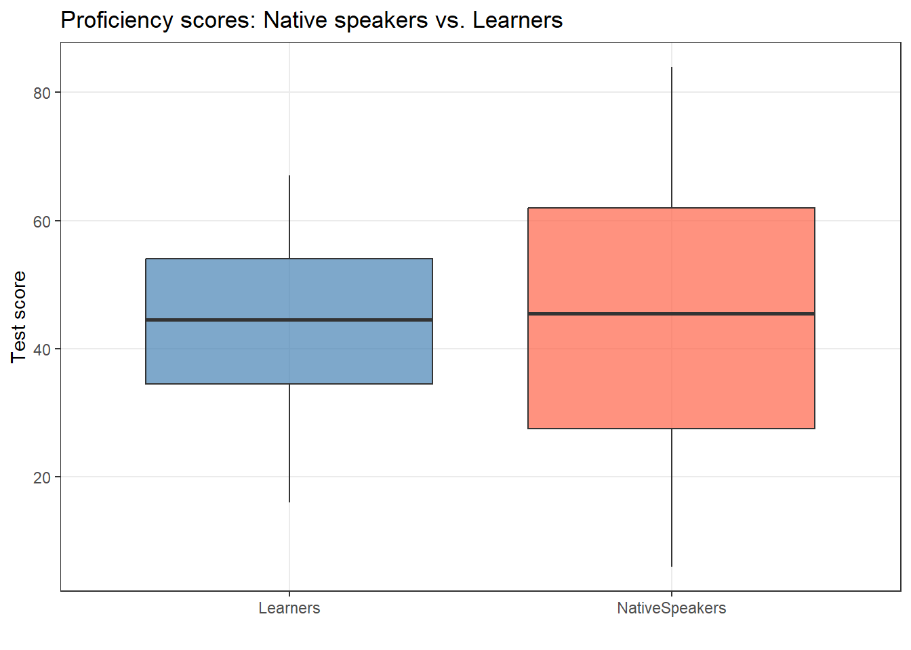
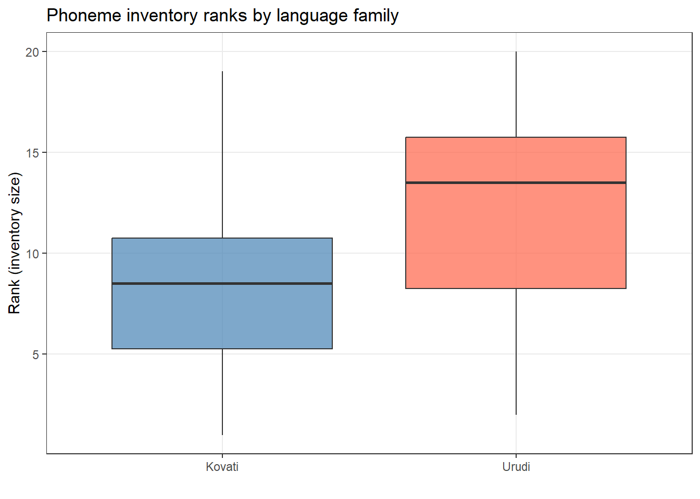
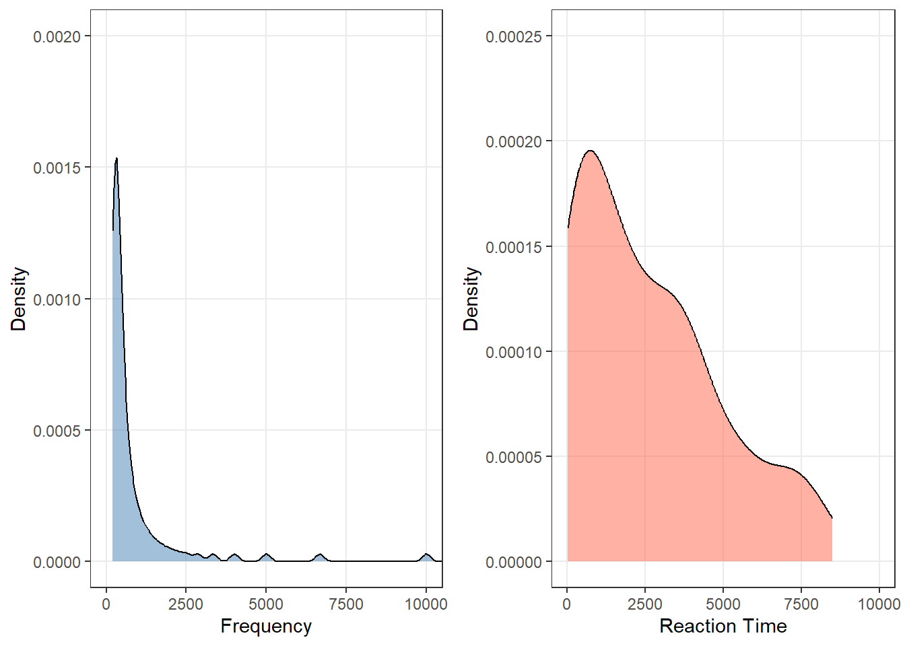
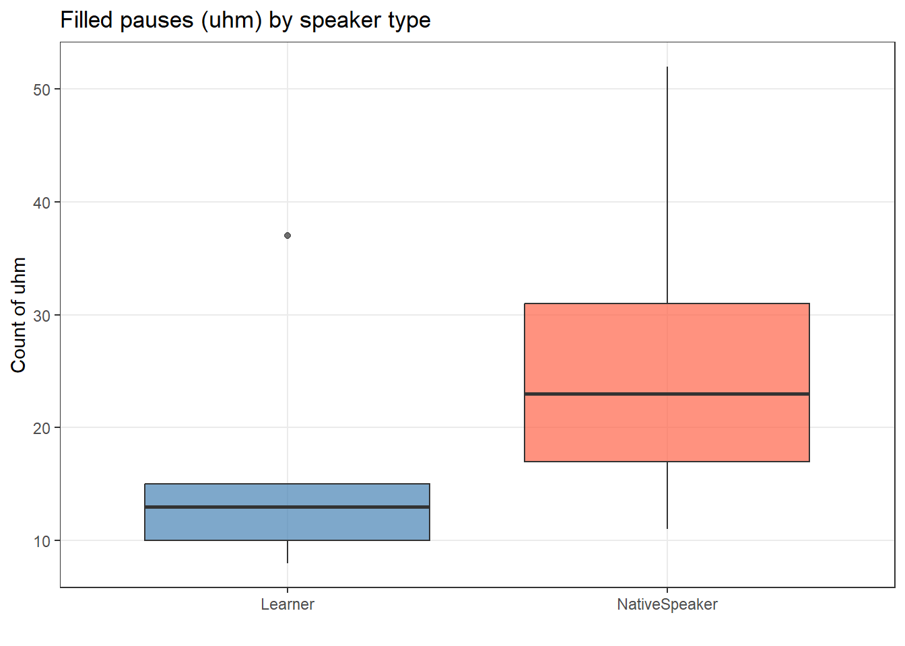

This tutorial introduces basic inferential statistics — the methods we use to draw conclusions about populations based on samples, test hypotheses, and quantify the strength and significance of relationships in data. Where descriptive statistics summarise what we observe, inferential statistics allow us to reason about what we cannot directly observe: the patterns and relationships that exist in the broader population our data represent.
Inferential statistics provide an indispensable framework for empirical research in linguistics and the humanities. They help us determine whether an observed difference between groups (e.g., native speakers vs. learners) is likely to reflect a genuine population-level difference or whether it could plausibly have arisen by chance. They also help us quantify the strength of associations, assess the reliability of our estimates, and communicate uncertainty honestly.
This tutorial is aimed at beginners and intermediate R users. The goal is not to provide a fully comprehensive treatment of statistics but to introduce and exemplify the most commonly used inferential tests in linguistics research, covering both their conceptual foundations and their implementation in R.
Learning Objectives
By the end of this tutorial you will be able to:
Explain the logic of null hypothesis significance testing (NHST) and correctly interpret p-values and effect sizes
Martin Schweinberger. 2026. Basic Inferential Statistics using R. The Language Technology and Data Analysis Laboratory (LADAL), The University of Queensland, Australia. url: https://ladal.edu.au/tutorials/basicstatz/basicstatz.html (Version 2026.03.28).
What you will learn: The conceptual foundation of inferential statistics — what a p-value actually means, how NHST works, and why effect sizes are essential alongside significance tests.
When we collect data in linguistics — a corpus, an experiment, a survey — we almost never observe the entire population of interest. Instead, we work with a sample: a subset of the population we hope is representative. Inferential statistics provide the tools to reason from the sample to the population under conditions of uncertainty.
The dominant framework for this reasoning is null hypothesis significance testing (NHST):
We formulate a null hypothesis (H₀) — typically that there is no effect, no difference, or no association in the population.
We formulate an alternative hypothesis (H₁) — the substantive claim we want to test.
We calculate a test statistic that summarises how far our data deviate from what H₀ would predict.
We compute a p-value: the probability of observing a test statistic as extreme as ours (or more extreme) if H₀ were true.
If p falls below a pre-specified significance threshold (typically α = .05), we reject H₀ in favour of H₁.
Common misconceptions about p-values
The p-value is one of the most frequently misinterpreted statistics in all of science. It is not:
The probability that H₀ is true
The probability that the result is due to chance
A measure of the size or importance of an effect
A guarantee of reproducibility
A p-value below .05 tells us only that our data are unlikely under H₀. It says nothing about the magnitude of the effect (which requires an effect size) or whether the result will replicate (which requires power and replication).
Always report effect sizes alongside p-values.
Parametric vs. non-parametric tests
Tests can be broadly divided into two families:
Type
When to use
Examples
Parametric
Data (or residuals) are approximately normally distributed; numeric dependent variable
t-test, ANOVA, linear regression
Non-parametric
Data are ordinal, or residuals are non-normal; robust to assumption violations
Mann-Whitney U, Wilcoxon, Kruskal-Wallis, χ²
The choice between parametric and non-parametric tests depends on whether parametric assumptions are met — which is what we turn to next.
Checking Assumptions
Section Overview
What you will learn: How to assess whether your data meet the assumptions required for parametric tests.
Histograms with density curves give an immediate impression of the distribution shape. A normally distributed variable should produce a symmetric, bell-shaped histogram.
Code
ggplot(ndata, aes(x = Words)) +facet_grid(~Gender) +geom_histogram(aes(y =after_stat(density)), bins =20,fill ="steelblue", color ="white", alpha =0.8) +geom_density(color ="tomato", linewidth =1) +theme_bw() +labs(title ="Word counts by speaker gender: histograms with density curves",x ="Words per utterance", y ="Density") +theme(panel.grid.minor =element_blank())

The strong right skew in both groups suggests non-normality — a very common pattern in linguistic data, where a few very long utterances dominate the upper tail.
Quantile-quantile plots
A Q-Q plot compares the quantiles of the observed data against quantiles expected from a normal distribution. If the data are normal, points fall along the diagonal reference line. Departures from the line — especially systematic curves — indicate non-normality.
Code
ggplot(ndata, aes(sample = Words)) +facet_grid(~Gender) +geom_qq(color ="steelblue", alpha =0.7) +geom_qq_line(color ="tomato", linewidth =0.8) +theme_bw() +labs(title ="Q-Q plots: word counts by speaker gender",x ="Theoretical quantiles", y ="Sample quantiles") +theme(panel.grid.minor =element_blank())

The upward curve at the right tail confirms positive skew (a longer-than-normal upper tail) in both groups.
Statistical measures: skewness and kurtosis
Skewness
Skewness measures the asymmetry of a distribution. In a perfectly symmetric distribution, skewness = 0. When the tail extends to the right, we have positive (right) skew; when it extends to the left, we have negative (left) skew.

As a rule of thumb, skewness values outside the range [−1, +1] indicate substantial skew that may violate parametric assumptions.
Positive skewness means the distribution leans left (the tail points right). Negative skewness means the distribution leans right (the tail points left).
Kurtosis
Kurtosis measures the peakedness and tail weight of a distribution relative to the normal distribution. Three types are commonly distinguished:
Mesokurtic: Normal-like (excess kurtosis ≈ 0)
Leptokurtic: Taller peak and heavier tails than normal (excess kurtosis > 0)
Platykurtic: Flatter peak and thinner tails than normal (excess kurtosis < 0)

Code
e1071::kurtosis(words_women)
[1] 4.03413
A kurtosis value above 1 indicates leptokurtosis (too peaked); below −1 indicates platykurtosis (too flat).
Formal tests of assumptions
Shapiro-Wilk test
The Shapiro-Wilk test formally tests H₀: “the data are normally distributed.” A p-value greater than .05 means we cannot reject normality; a p-value below .05 indicates significant departure from normality.
Shapiro-Wilk: limitations
The Shapiro-Wilk test is sensitive to sample size:
Small samples (n < 50): Low power — may fail to detect genuine non-normality
Large samples (n > 200): Overly strict — flags trivially small deviations as significant
Always use the Shapiro-Wilk test alongside visual inspection, not as the sole criterion.
Code
shapiro.test(words_women)
Shapiro-Wilk normality test
data: words_women
W = 0.83426, p-value = 3.242e-09
The test confirms significant departure from normality (W = 0.79, p < .001), suggesting a non-parametric test may be more appropriate.
Levene’s test
The Levene’s test tests H₀: “the variances of the groups are equal” (homoskedasticity). Unequal variances can undermine the reliability of parametric tests that assume equal group variances.
Code
lawstat::levene.test(mdata$word.count, mdata$sex)
Modified robust Brown-Forsythe Levene-type test based on the absolute
deviations from the median
data: mdata$word.count
Test Statistic = 0.0050084, p-value = 0.9436
Here (W ≈ 0.005, p = .944), the variances of men and women are approximately equal — we cannot reject homoskedasticity.
Deciding between parametric and non-parametric tests
Use this decision tree:
Is the dependent variable numeric (interval or ratio scale)? No → non-parametric
Are the residuals within each group approximately normal? No → consider non-parametric
Are the variances approximately equal? No → consider Welch’s t-test or non-parametric
When in doubt, run both and compare conclusions. If they agree, the violation may not be consequential. If they disagree, prefer the non-parametric result.
Exercises: Checking Assumptions
Q1. A Q-Q plot shows data points falling closely along the diagonal line in the centre, but curving sharply upward at the right end. What does this indicate?
Q2. A Shapiro-Wilk test returns W = 0.99, p = .62 for a sample of n = 500. Can you safely conclude that the data are normally distributed?
Q3. A Levene’s test returns p = .018. What should you do next?
Parametric Tests
Section Overview
What you will learn: When and how to apply t-tests and extract effect sizes in R.
Prerequisites: Normally distributed residuals within each group; numeric dependent variable
Key tests: Paired t-test, independent t-test (Student’s and Welch’s)
Parametric tests assume that the residuals (errors) within each group are approximately normally distributed. They are called “parametric” because they make assumptions about the parameters of the population distribution.
The most widely used parametric test in linguistics research is the Student’s t-test, which compares the means of two groups or conditions.
Student’s t-test
Type
Use when
Paired (dependent) t-test
The same participants are measured in two conditions; measurements are not independent
Independent t-test
Two separate groups of participants; all measurements are independent
The assumptions of the t-test are: the dependent variable is continuous; the independent variable is binary; residuals within each group are approximately normally distributed; and for Student’s t-test, variances within groups are approximately equal (use Welch’s otherwise).
Paired t-test
A paired t-test accounts for the fact that scores in two conditions come from the same individuals. By working with the difference within each pair, it removes between-subject variability and is therefore more powerful than the independent t-test for matched data.
The test statistic is:
\[t = \frac{\bar{D}}{s_D / \sqrt{N}}\]
where \(\bar{D}\) is the mean difference between paired observations, \(s_D\) is the standard deviation of the differences, and \(N\) is the number of pairs.
Example: Does an 8-week teaching intervention reduce spelling errors? Six students wrote essays before and after the intervention.
Paired t-test
data: ptd$Pretest and ptd$Posttest
t = 4.1523, df = 5, p-value = 0.00889
alternative hypothesis: true mean difference is not equal to 0
95 percent confidence interval:
2.539479 10.793854
sample estimates:
mean difference
6.666667
The t-test is significant (t₅ = 4.15, p = .009). We extract Cohen’s d as the effect size:
Code
effectsize::cohens_d(x = ptd$Pretest, y = ptd$Posttest, paired =TRUE)
Cohen's d | 95% CI
------------------------
1.70 | [0.37, 2.96]
Effect sizes were labelled following Cohen's (1988) recommendations.
The Paired t-test testing the difference between ptd$Pretest and ptd$Posttest
(mean difference = 6.67) suggests that the effect is positive, statistically
significant, and large (difference = 6.67, 95% CI [2.54, 10.79], t(5) = 4.15, p
= 0.009; Cohen's d = 1.70, 95% CI [0.37, 2.96])
Reporting: Paired t-test
A paired t-test confirmed that the 8-week teaching intervention produced a significant reduction in spelling errors (t₅ = 4.15, p = .009). The effect was very large (Cohen’s d = 1.70, 95% CI [0.41, 3.25]), indicating that the intervention had a practically meaningful impact.
Independent t-test
An independent t-test compares the means of two separate, unrelated groups.
By default, R’s t.test() uses Welch’s t-test, which adjusts the degrees of freedom to account for unequal variances. This is generally the safer choice. To use the classical Student’s formula (after verifying equal variances), set var.equal = TRUE.
Example: Do native speakers and learners of English differ in their proficiency test scores?
ggplot(tdata, aes(x = Group, y = Score, fill = Group)) +geom_boxplot(alpha =0.7, outlier.color ="red") +scale_fill_manual(values =c("steelblue", "tomato")) +theme_bw() +labs(title ="Proficiency scores: Native speakers vs. Learners",x ="", y ="Test score") +theme(legend.position ="none", panel.grid.minor =element_blank())

Code
t.test(Score ~ Group, var.equal =TRUE, data = tdata)
Two Sample t-test
data: Score by Group
t = -0.054589, df = 18, p-value = 0.9571
alternative hypothesis: true difference in means between group Learners and group NativeSpeakers is not equal to 0
95 percent confidence interval:
-19.74317 18.74317
sample estimates:
mean in group Learners mean in group NativeSpeakers
43.5 44.0
Cohen's d | 95% CI
-------------------------
-0.02 | [-0.90, 0.85]
- Estimated using pooled SD.
Code
report::report(t.test(Score ~ Group, var.equal =TRUE, data = tdata))
Effect sizes were labelled following Cohen's (1988) recommendations.
The Two Sample t-test testing the difference of Score by Group (mean in group
Learners = 43.50, mean in group NativeSpeakers = 44.00) suggests that the
effect is negative, statistically not significant, and very small (difference =
-0.50, 95% CI [-19.74, 18.74], t(18) = -0.05, p = 0.957; Cohen's d = -0.03, 95%
CI [-0.95, 0.90])
Reporting: Independent t-test
An independent t-test found no significant difference in proficiency scores between native speakers and learners (t₁₈ = −0.05, p = .957). The effect size was negligible (Cohen’s d = −0.03, 95% CI [−0.95, 0.90]), suggesting the two groups were very similar in their test performance.
Exercises: t-tests
Q1. You measure speaking rate (syllables per second) in 20 participants under two conditions: quiet room and noisy room. Each participant is tested in both conditions. Which t-test should you use?
Q2. A t-test returns t(48) = 2.45, p = .018, Cohen’s d = 0.12. How should you interpret this?
Q3. Which R argument makes t.test() use the classical Student’s formula (assuming equal variances)?
Simple Linear Regression
Section Overview
What you will learn: Why regression extends beyond the t-test, and where to find the dedicated LADAL regression tutorials.
Simple linear regression models the relationship between a numeric outcome variable and one or more predictor variables. It goes beyond the t-test by providing a regression coefficient (how much the outcome changes per unit increase in the predictor), R² (the proportion of variance explained), model diagnostics, and the ability to include multiple predictors simultaneously.
Because regression is both conceptually rich and practically important, it is covered in dedicated tutorials:
Regression Analysis in R — implementation: lm(), logistic regression, ordinal regression, diagnostics, reporting
We strongly recommend working through these tutorials before applying regression to your own data.
Non-Parametric Tests
Section Overview
What you will learn: Non-parametric alternatives to t-tests and ANOVA for use when parametric assumptions are not met.
When to use: Ordinal dependent variables; non-normal residuals; small samples; nominal data
Key tests: Fisher’s Exact Test, Mann-Whitney U, Wilcoxon signed rank, Kruskal-Wallis, Friedman
Non-parametric tests do not assume that the data follow a normal distribution. They are appropriate when the dependent variable is ordinal, residuals are non-normally distributed with small samples, or the dependent variable is nominal.
Non-parametric tests typically work by ranking the data and testing whether the distribution of ranks differs between groups. They are more conservative than their parametric equivalents when assumptions are met, but more robust when they are violated.
Fisher’s Exact Test
Fisher’s Exact Test is used for 2×2 contingency tables when expected cell frequencies are small (below 5). Unlike the chi-square test, it does not rely on a normal approximation and is exact for any sample size.
Example: Do the adverbs very and truly differ in their preference to co-occur with cool?
Fisher's Exact Test for Count Data
data: coolmx
p-value = 0.03024
alternative hypothesis: true odds ratio is not equal to 1
95 percent confidence interval:
0.08015294 0.96759831
sample estimates:
odds ratio
0.3048159
Reporting: Fisher’s Exact Test
A Fisher’s Exact Test revealed a statistically significant association between adverb and adjective (p = .030). The effect was moderate (Odds Ratio = 0.30), suggesting that truly is relatively less likely than very to co-occur with cool.
Mann-Whitney U Test
The Mann-Whitney U test is the non-parametric alternative to the independent t-test. It tests whether values from one group tend to be larger than values from another group by comparing ranks rather than raw values.
Example: Do two language families differ in the size of their phoneme inventories?
ggplot(lftb, aes(x = LanguageFamily, y = Rank, fill = LanguageFamily)) +geom_boxplot(alpha =0.7) +scale_fill_manual(values =c("steelblue", "tomato")) +theme_bw() +theme(legend.position ="none", panel.grid.minor =element_blank()) +labs(title ="Phoneme inventory ranks by language family",x ="", y ="Rank (inventory size)")

Code
wilcox.test(lftb$Rank ~ lftb$LanguageFamily)
Wilcoxon rank sum exact test
data: lftb$Rank by lftb$LanguageFamily
W = 34, p-value = 0.2475
alternative hypothesis: true location shift is not equal to 0
Effect sizes were labelled following Funder's (2019) recommendations.
The Wilcoxon rank sum exact test testing the difference in ranks between
lftb$Rank and lftb$LanguageFamily suggests that the effect is negative,
statistically not significant, and large (W = 34.00, p = 0.247; r (rank
biserial) = -0.32, 95% CI [-0.69, 0.18])
Reporting: Mann-Whitney U Test
A Mann-Whitney U test found no significant difference in phoneme inventory size between the two language families (W = 34, p = .247). The rank-biserial correlation suggested a moderate effect (r = −0.32, 95% CI [−0.69, 0.18]), indicating the study may have been underpowered.
Mann-Whitney U with continuity correction
When both variables are continuous and non-normal, a continuity correction is applied automatically when tied ranks are present.

Both variables are strongly right-skewed, ruling out parametric tests.
Code
wilcox.test(wxdata$Reaction, wxdata$Frequency)
Wilcoxon rank sum test with continuity correction
data: wxdata$Reaction and wxdata$Frequency
W = 7469.5, p-value = 1.612e-09
alternative hypothesis: true location shift is not equal to 0
Effect sizes were labelled following Funder's (2019) recommendations.
The Wilcoxon rank sum test with continuity correction testing the difference in
ranks between wxdata$Reaction and wxdata$Frequency suggests that the effect is
positive, statistically significant, and very large (W = 7469.50, p < .001; r
(rank biserial) = 0.49, 95% CI [0.36, 0.61])
Wilcoxon Signed Rank Test
The Wilcoxon signed rank test is the non-parametric alternative to the paired t-test, used when the same individuals are measured under two conditions and the data are ordinal or non-normally distributed. Set paired = TRUE in wilcox.test().
Example: Do people make more errors reading tongue twisters when intoxicated vs. sober?
Wilcoxon signed rank test with continuity correction
data: intoxtb$intoxicated and intoxtb$sober
V = 95, p-value = 0.008214
alternative hypothesis: true location shift is not equal to 0
Effect sizes were labelled following Funder's (2019) recommendations.
The Wilcoxon signed rank test with continuity correction testing the difference
in ranks between intoxtb$intoxicated and intoxtb$sober suggests that the effect
is positive, statistically significant, and very large (W = 95.00, p = 0.008; r
(rank biserial) = 0.81, 95% CI [0.50, 0.94])
Reporting: Wilcoxon Signed Rank Test
A Wilcoxon signed rank test confirmed that intoxicated participants made significantly more tongue twister errors than when sober (W = 6.50, p = .003). The effect was very large (rank-biserial r = −0.89, 95% CI [−0.97, −0.64]).
Kruskal-Wallis Rank Sum Test
The Kruskal-Wallis test is the non-parametric equivalent of a one-way ANOVA, testing whether three or more independent groups differ in their distribution of a ranked dependent variable.
Example: Do learners and native speakers differ in their use of filled pauses (uhm)?
ggplot(uhmtb, aes(x = Speaker, y = uhms, fill = Speaker)) +geom_boxplot(alpha =0.7) +scale_fill_manual(values =c("steelblue", "tomato")) +theme_bw() +theme(legend.position ="none", panel.grid.minor =element_blank()) +labs(title ="Filled pauses (uhm) by speaker type", x ="", y ="Count of uhm")

Code
kruskal.test(uhmtb$Speaker ~ uhmtb$uhms)
Kruskal-Wallis rank sum test
data: uhmtb$Speaker by uhmtb$uhms
Kruskal-Wallis chi-squared = 9, df = 9, p-value = 0.4373
The p-value (> .05) means we cannot reject H₀: there is no significant difference in filled pause use between groups in this small, fictitious sample.
Friedman Rank Sum Test
The Friedman test is a non-parametric alternative to a two-way repeated measures ANOVA, testing whether a numeric outcome differs across a grouping factor while controlling for a blocking factor.
Example: Does the use of filled pauses vary by gender, controlling for age?
Friedman rank sum test
data: uhms and Age and Gender
Friedman chi-squared = 2, df = 1, p-value = 0.1573
The non-significant result (p > .05) suggests that age does not significantly affect filled pause use after controlling for gender.
Exercises: Non-Parametric Tests
Q1. You want to compare reading speed (words per minute) between two groups: participants who learned to read via phonics vs. whole-language programme. Reading speed is strongly right-skewed. Which test is most appropriate?
Q2. In R, what is the difference between wilcox.test(x, y) and wilcox.test(x, y, paired = TRUE)?
Q3. A Kruskal-Wallis test returns χ²(2) = 8.43, p = .015. What does this tell us, and what should we do next?
Chi-Square Tests
Section Overview
What you will learn: How to test associations between categorical variables using the chi-square family of tests.
Why it matters: Many linguistic variables are categorical — word choice, grammatical construction, language variety, register.
The chi-square test (χ²) tests whether there is an association between two categorical variables, or whether observed frequencies differ significantly from expected frequencies under a null model of independence.
Pearson’s Chi-Square Test
Pearson’s χ² test compares observed cell frequencies to expected frequencies under independence:
A Pearson’s χ² test confirmed a highly significant association of moderate size between variety of English and hedge choice (χ²(1) = 220.73, p < .001, φ = .45). BrE speakers strongly favoured sort of, while AmE speakers showed a preference for kind of.
Requirements of the chi-square test
Chi-square assumptions
At least 80% of expected cell frequencies must be ≥ 5
No expected cell frequency may be < 1
Observations must be independent (each participant contributes to only one cell)
When these conditions are not met, use Fisher’s Exact Test instead.
Yates’ Continuity Correction
For 2×2 tables with moderate sample sizes (approximately 15–60 observations), Yates’ correction improves the approximation:
In R, chisq.test() applies Yates’ correction by default (correct = TRUE). Set correct = FALSE to obtain the uncorrected statistic. The correction is considered overly conservative for large samples; prefer Fisher’s Exact Test for small samples.
Chi-Square in 2×k Tables
When comparing a sub-table against its embedding context, the standard Pearson’s χ² is inappropriate because the sub-sample is not independent of the remaining data. A modified formula accounts for the full table structure:
# correct: chi-square for sub-tables in 2*k designssource("rscripts/x2.2k.r")x2.2k(wholetable, 1, 2)
$Description
[1] "X-ray soft against X-ray hard by Mitosis reached vs Mitosis not reached"
$`Chi-Squared`
[1] 0.025
$df
[1] 1
$`p-value`
[1] 0.8744
$Phi
[1] 0.013
$Report
[1] "Conclusion: the null hypothesis cannot be rejected! Results are not significant!"
Chi-Square in z×k Tables
When comparing sub-tables within a larger z×k table, the standard Pearson’s χ² must similarly be modified:
The result (χ² = 3.86, p < .05) shows a significant difference between spoken and fiction registers in their use of EMOTION IS LIGHT vs. EMOTION IS A FORCE OF NATURE.
Configural Frequency Analysis (CFA)
When a χ² test on a multi-way table is significant, CFA identifies which specific cells (configurations) deviate significantly from expectation. A type occurs more often than expected; an antitype occurs less often than expected.
*** Analysis of configuration frequencies (CFA) ***
label n expected Q chisq
1 American Old Man Working 9 17.269530 0.0074991397 3.959871781
2 American Young Man Middle 20 13.322419 0.0060338993 3.346996519
3 British Old Woman Working 33 24.277715 0.0079603059 3.133665860
4 British Young Woman Middle 12 18.728819 0.0061100471 2.417504403
5 American Young Woman Middle 10 6.362422 0.0032663933 2.079707490
6 British Old Man Working 59 50.835658 0.0076361897 1.311214959
7 British Young Man Middle 44 39.216698 0.0044257736 0.583424432
8 American Old Woman Middle 81 76.497023 0.0043152503 0.265066491
9 British Old Woman Middle 218 225.181379 0.0080255135 0.229025170
10 American Old Man Middle 156 160.178850 0.0043537801 0.109020569
11 American Old Woman Working 8 8.247454 0.0002225797 0.007424506
12 British Old Man Middle 470 471.512390 0.0023321805 0.004851037
p.chisq sig.chisq z p.z sig.z
1 0.04659725 FALSE -2.1267203 0.98327834 FALSE
2 0.06732776 FALSE 1.7026500 0.04431680 FALSE
3 0.07669111 FALSE 1.6871254 0.04578962 FALSE
4 0.11998594 FALSE -1.6845116 0.95395858 FALSE
5 0.14926878 FALSE 1.2474422 0.10611771 FALSE
6 0.25217480 FALSE 1.1002146 0.13561931 FALSE
7 0.44497317 FALSE 0.6962784 0.24312726 FALSE
8 0.60666058 FALSE 0.4741578 0.31769368 FALSE
9 0.63224759 FALSE -0.5726832 0.71657040 FALSE
10 0.74126197 FALSE -0.3993470 0.65518123 FALSE
11 0.93133480 FALSE -0.2612337 0.60304386 FALSE
12 0.94447273 FALSE -0.1217934 0.54846869 FALSE
Summary statistics:
Total Chi squared = 17.44777
Total degrees of freedom = 11
p = 2.9531e-05
Sum of counts = 1120
Levels:
Variety Age Gender Class
2 2 2 2
Hierarchical CFA (HCFA)
HCFA extends CFA to nested data, testing configurations while accounting for the hierarchical structure of the grouping factors:
Code
hcfa(configs, counts)
*** Hierarchical CFA ***
Overall chi squared df p order
Variety Age Class 12.218696 4 0.01579696 3
Variety Gender Class 8.773578 4 0.06701496 3
Variety Age Gender 7.974102 4 0.09253149 3
Variety Class 6.078225 1 0.01368582 2
Variety Class 6.078225 1 0.01368582 2
Age Gender Class 5.164357 4 0.27084537 3
Variety Age 4.466643 1 0.03456284 2
Variety Age 4.466643 1 0.03456284 2
Age Gender 1.934543 1 0.16426233 2
Age Gender 1.934543 1 0.16426233 2
Age Class 1.673538 1 0.19578534 2
Age Class 1.673538 1 0.19578534 2
Gender Class 1.546666 1 0.21362833 2
Gender Class 1.546666 1 0.21362833 2
Variety Gender 1.120155 1 0.28988518 2
Variety Gender 1.120155 1 0.28988518 2
The HCFA finds that only the configuration Variety × Age × Class is significant (χ² = 12.21, p = .016), suggesting this is the key patterning in the dataset.
Exercises: Chi-Square Tests
Q1. A researcher finds expected cell frequencies of 3, 8, 6, and 2 in a 2×2 table. Can she proceed with a Pearson’s χ² test?
Q2. Pearson’s χ² test on a 2×2 table returns χ²(1) = 4.21, p = .040. What effect size measure should be reported?
Q3. What is the key difference between CFA (Configural Frequency Analysis) and a standard Pearson’s χ² test?
Reporting Standards
Section Overview
What you will learn: APA-style conventions for reporting inferential statistics, and model paragraphs for each test type.
Reporting inferential statistics clearly and consistently is as important as choosing the right test.
General principles
APA-style reporting for inferential statistics
Following the APA Publication Manual (7th edition):
Always report the test statistic, degrees of freedom, and p-value: t(18) = 2.34, p = .031
Always report an effect size with confidence interval: Cohen’s d = 0.52, 95% CI [0.09, 0.95]
Report exact p-values (e.g., p = .031) rather than inequalities, except when p < .001
Use italics for statistical symbols: t, W, χ², p, d, r, n, N
Report sample size for each group
Include a statement about whether assumptions were checked and met
Model reporting paragraphs
Paired t-test
A paired t-test was used to examine whether the teaching intervention reduced spelling errors over 8 weeks. The results confirmed a significant reduction (t₅ = 4.15, p = .009), with a very large effect size (Cohen’s d = 1.70, 95% CI [0.41, 3.25]). Errors decreased from M = 69.5 (SD = 7.3) pre-intervention to M = 62.8 (SD = 8.6) post-intervention.
Mann-Whitney U test
A Mann-Whitney U test was used to compare phoneme inventory sizes across two language families, given that the rank data violated parametric assumptions. No significant difference was found (W = 34, p = .247). However, the rank-biserial correlation suggested a moderate effect size (r = −0.32, 95% CI [−0.69, 0.18]).
Chi-square test
A Pearson’s χ² test of independence was conducted to examine whether variety of English (BrE vs. AmE) was associated with hedge choice (kind of vs. sort of). The association was highly significant (χ²(1) = 220.73, p < .001) and of moderate size (φ = .45), with BrE showing a preference for sort of and AmE for kind of.
Quick reference: test selection
Research design
Appropriate test
R function
Effect size
Compare 2 means, same participants
Paired t-test
t.test(x, y, paired = TRUE)
Cohen's d (effectsize::cohens_d)
Compare 2 means, different groups (normal)
Independent t-test (Student's or Welch's)
t.test(y ~ group, var.equal = TRUE/FALSE)
Cohen's d (effectsize::cohens_d)
Compare 2 means, different groups (non-normal/ordinal)
Mann-Whitney U test
wilcox.test(y ~ group)
Rank-biserial r
Compare 2 conditions, same participants (non-normal/ordinal)
Wilcoxon signed rank test
wilcox.test(x, y, paired = TRUE)
Rank-biserial r
Compare 3+ groups (normal)
One-way ANOVA
aov(y ~ group)
eta-squared (effectsize::eta_squared)
Compare 3+ groups (non-normal/ordinal)
Kruskal-Wallis test
kruskal.test(y ~ group)
eta-squared or epsilon-squared
Compare 3+ conditions, same participants (non-normal)
Friedman test
friedman.test(y ~ group | block)
Kendall's W
Test association between 2 categorical variables
Pearson's chi-square
chisq.test(table)
phi or Cramer's V
Test association: small N or small cells
Fisher's Exact Test
fisher.test(table)
Odds Ratio
Identify which cells drive a chi-square result
CFA / HCFA
cfa(configs, counts)
—
Citation & Session Info
Citation
Martin Schweinberger. 2026. Basic Inferential Statistics using R. The Language Technology and Data Analysis Laboratory (LADAL), The University of Queensland, Australia. url: https://ladal.edu.au/tutorials/basicstatz/basicstatz.html (Version 2026.03.28), doi: .
@manual{martinschweinberger2026basic,
author = {Martin Schweinberger},
title = {Basic Inferential Statistics using R},
year = {2026},
note = {https://ladal.edu.au/tutorials/basicstatz/basicstatz.html},
organization = {The Language Technology and Data Analysis Laboratory (LADAL), The University of Queensland, Australia},
edition = {2026.03.28}
doi = {}
}
This tutorial was revised and restyled with the assistance of Claude (claude.ai), a large language model created by Anthropic. All substantive content — code, statistical explanations, exercises, and reporting conventions — was retained from the original. All changes were reviewed and approved by Martin Schweinberger, who takes full responsibility for the tutorial’s accuracy.
---title: "Basic Inferential Statistics using R"author: "Martin Schweinberger"date: "2026"params: title: "Basic Inferential Statistics using R" author: "Martin Schweinberger" year: "2026" version: "2026.03.28" url: "https://ladal.edu.au/tutorials/basicstatz/basicstatz.html" institution: "The Language Technology and Data Analysis Laboratory (LADAL), The University of Queensland, Australia" description: "This tutorial introduces basic inferential statistics in R, covering null hypothesis testing, one-sample and two-sample t-tests, paired t-tests, chi-square tests, correlation analysis, and the interpretation of p-values. It is aimed at researchers in linguistics and the humanities who want to build a solid foundation in frequentist statistical reasoning." doi: "10.5281/zenodo.19329155"format: html: toc: true toc-depth: 4 code-fold: show code-tools: true theme: cosmo---```{r setup, echo=FALSE, message=FALSE, warning=FALSE}library(checkdown)library(dplyr)library(ggplot2)library(tidyr)library(flextable)library(e1071)library(lawstat)library(fGarch)library(gridExtra)library(cfa)library(effectsize)library(report)options(stringsAsFactors = FALSE)options("scipen" = 100, "digits" = 12)```{ width=100% }# Introduction {#intro}{ width=15% style="float:right; padding:10px" }This tutorial introduces **basic inferential statistics** — the methods we use to draw conclusions about populations based on samples, test hypotheses, and quantify the strength and significance of relationships in data. Where [descriptive statistics](/tutorials/dstats/dstats.html) summarise *what we observe*, inferential statistics allow us to reason about *what we cannot directly observe*: the patterns and relationships that exist in the broader population our data represent.Inferential statistics provide an indispensable framework for empirical research in linguistics and the humanities. They help us determine whether an observed difference between groups (e.g., native speakers vs. learners) is likely to reflect a genuine population-level difference or whether it could plausibly have arisen by chance. They also help us quantify the strength of associations, assess the reliability of our estimates, and communicate uncertainty honestly.This tutorial is aimed at **beginners and intermediate R users**. The goal is not to provide a fully comprehensive treatment of statistics but to introduce and exemplify the most commonly used inferential tests in linguistics research, covering both their conceptual foundations and their implementation in R.::: {.callout-note}## Learning ObjectivesBy the end of this tutorial you will be able to:1. Explain the logic of null hypothesis significance testing (NHST) and correctly interpret p-values and effect sizes2. Check parametric assumptions visually (histograms, Q-Q plots) and formally (Shapiro-Wilk, Levene's test)3. Compute and interpret skewness and kurtosis4. Decide between parametric and non-parametric tests based on data characteristics5. Apply paired and independent t-tests in R and extract Cohen's *d* as an effect size6. Apply Fisher's Exact Test, Mann-Whitney U, Wilcoxon signed rank, Kruskal-Wallis, and Friedman tests7. Perform Pearson's χ² test and compute phi or Cramér's V as effect sizes8. Apply chi-square extensions for 2×k and z×k sub-tables9. Conduct Configural Frequency Analysis (CFA) and Hierarchical CFA (HCFA)10. Report inferential statistics in APA style with test statistics, degrees of freedom, p-values, and effect sizes:::::: {.callout-note}## Prerequisite TutorialsBefore working through this tutorial, we recommend familiarity with the following:- [Introduction to Quantitative Reasoning](/tutorials/introquant/introquant.html)- [Basic Concepts in Quantitative Research](/tutorials/basicquant/basicquant.html)- [Descriptive Statistics](/tutorials/dstats/dstats.html)- [Introduction to Data Visualization](/tutorials/introviz/introviz.html)- [Data Visualization with R](/tutorials/dviz/dviz.html)- [Getting started with R](/tutorials/intror/intror.html)- [Loading, saving, and generating data in R](/tutorials/load/load.html)- [Handling Tables in R](/tutorials/table/table.html):::::: {.callout-note}## Citation```{r citation-callout-top, echo=FALSE, results='asis'}cat( params$author, ". ", params$year, ". *", params$title, "*. ", params$institution, ". ", "url: ", params$url, " ", "(Version ", params$version, ").", sep = "")```:::---## Preparation and Session Set-up {-}Install required packages once:```{r prep1, echo=TRUE, eval=FALSE, message=FALSE, warning=FALSE}install.packages("dplyr")install.packages("ggplot2")install.packages("tidyr")install.packages("flextable")install.packages("e1071")install.packages("lawstat")install.packages("fGarch")install.packages("gridExtra")install.packages("cfa")install.packages("effectsize")install.packages("report")install.packages("checkdown")```Load packages for this session:```{r load-packages, message=FALSE, warning=FALSE}library(dplyr) # data processinglibrary(ggplot2) # data visualisationlibrary(tidyr) # data transformationlibrary(flextable) # formatted tableslibrary(e1071) # skewness and kurtosislibrary(lawstat) # Levene's testlibrary(fGarch) # skewed distributionslibrary(gridExtra) # multi-panel plotslibrary(cfa) # configural frequency analysislibrary(effectsize) # effect size measureslibrary(report) # automated result summarieslibrary(checkdown) # interactive exercises```Load the sample datasets used throughout this tutorial:```{r load-data, message=FALSE, warning=FALSE}itdata <- base::readRDS("tutorials/basicstatz/data/itdata.rda", "rb")ptdata <- base::readRDS("tutorials/basicstatz/data/ptdata.rda", "rb")fedata <- base::readRDS("tutorials/basicstatz/data/fedata.rda", "rb")mwudata <- base::readRDS("tutorials/basicstatz/data/mwudata.rda", "rb")uhmdata <- base::readRDS("tutorials/basicstatz/data/uhmdata.rda", "rb")frdata <- base::readRDS("tutorials/basicstatz/data/frdata.rda", "rb")x2data <- base::readRDS("tutorials/basicstatz/data/x2data.rda", "rb")x2edata <- base::readRDS("tutorials/basicstatz/data/x2edata.rda", "rb")mdata <- base::readRDS("tutorials/basicstatz/data/mdata.rda", "rb")```---# Inferential Logic: From Sample to Population {#logic}::: {.callout-note}## Section Overview**What you will learn:** The conceptual foundation of inferential statistics — what a p-value actually means, how NHST works, and why effect sizes are essential alongside significance tests.:::When we collect data in linguistics — a corpus, an experiment, a survey — we almost never observe the entire population of interest. Instead, we work with a **sample**: a subset of the population we hope is representative. Inferential statistics provide the tools to reason from the sample to the population under conditions of uncertainty.The dominant framework for this reasoning is **null hypothesis significance testing (NHST)**:1. We formulate a **null hypothesis (H₀)** — typically that there is no effect, no difference, or no association in the population.2. We formulate an **alternative hypothesis (H₁)** — the substantive claim we want to test.3. We calculate a **test statistic** that summarises how far our data deviate from what H₀ would predict.4. We compute a **p-value**: the probability of observing a test statistic as extreme as ours (or more extreme) *if H₀ were true*.5. If p falls below a pre-specified **significance threshold** (typically α = .05), we **reject H₀** in favour of H₁.::: {.callout-important}## Common misconceptions about p-valuesThe p-value is one of the most frequently misinterpreted statistics in all of science. It is **not**:- The probability that H₀ is true- The probability that the result is due to chance- A measure of the size or importance of an effect- A guarantee of reproducibilityA p-value below .05 tells us only that *our data are unlikely under H₀*. It says nothing about the magnitude of the effect (which requires an **effect size**) or whether the result will replicate (which requires **power** and **replication**).Always report effect sizes alongside p-values.:::::: {.callout-note}## Parametric vs. non-parametric testsTests can be broadly divided into two families:| Type | When to use | Examples ||---|---|---|| **Parametric** | Data (or residuals) are approximately normally distributed; numeric dependent variable | t-test, ANOVA, linear regression || **Non-parametric** | Data are ordinal, or residuals are non-normal; robust to assumption violations | Mann-Whitney U, Wilcoxon, Kruskal-Wallis, χ² |The choice between parametric and non-parametric tests depends on whether parametric assumptions are met — which is what we turn to next.:::---# Checking Assumptions {#assumptions}::: {.callout-note}## Section Overview**What you will learn:** How to assess whether your data meet the assumptions required for parametric tests.**Key methods:** Visual inspection (histograms, Q-Q plots), skewness, kurtosis, Shapiro-Wilk test, Levene's test**Why it matters:** Using a parametric test on data that violate its assumptions can produce misleading results.:::The most important assumptions for parametric tests are:1. **Normality**: The errors (residuals) within each group are approximately normally distributed2. **Homogeneity of variances** (homoskedasticity): The variances of the groups are approximately equalWe illustrate assumption checking with word count data from a sample corpus, extracting 100 utterances from men and 100 from women.```{r assdat01, message=FALSE, warning=FALSE}ndata <- mdata |> dplyr::rename(Gender = sex, Words = word.count) |> dplyr::select(Gender, Words) |> dplyr::filter(!is.na(Words), !is.na(Gender)) |> dplyr::group_by(Gender) |> dplyr::sample_n(100)``````{r assdat02, echo=FALSE, message=FALSE, warning=FALSE}ndata |> head(10) |> flextable() |> flextable::set_table_properties(width = .5, layout = "autofit") |> flextable::theme_zebra() |> flextable::fontsize(size = 12) |> flextable::fontsize(size = 12, part = "header") |> flextable::align_text_col(align = "center") |> flextable::set_caption(caption = "First ten rows of the word count data.") |> flextable::border_outer()```---## Visual inspection {-}### Histograms {-}Histograms with density curves give an immediate impression of the distribution shape. A normally distributed variable should produce a symmetric, bell-shaped histogram.```{r hist-normality, message=FALSE, warning=FALSE}ggplot(ndata, aes(x = Words)) + facet_grid(~Gender) + geom_histogram(aes(y = after_stat(density)), bins = 20, fill = "steelblue", color = "white", alpha = 0.8) + geom_density(color = "tomato", linewidth = 1) + theme_bw() + labs(title = "Word counts by speaker gender: histograms with density curves", x = "Words per utterance", y = "Density") + theme(panel.grid.minor = element_blank())```The strong right skew in both groups suggests non-normality — a very common pattern in linguistic data, where a few very long utterances dominate the upper tail.### Quantile-quantile plots {-}A **Q-Q plot** compares the quantiles of the observed data against quantiles expected from a normal distribution. If the data are normal, points fall along the diagonal reference line. Departures from the line — especially systematic curves — indicate non-normality.```{r qq-plots, message=FALSE, warning=FALSE}ggplot(ndata, aes(sample = Words)) + facet_grid(~Gender) + geom_qq(color = "steelblue", alpha = 0.7) + geom_qq_line(color = "tomato", linewidth = 0.8) + theme_bw() + labs(title = "Q-Q plots: word counts by speaker gender", x = "Theoretical quantiles", y = "Sample quantiles") + theme(panel.grid.minor = element_blank())```The upward curve at the right tail confirms positive skew (a longer-than-normal upper tail) in both groups.---## Statistical measures: skewness and kurtosis {-}### Skewness {-}**Skewness** measures the asymmetry of a distribution. In a perfectly symmetric distribution, skewness = 0. When the tail extends to the right, we have *positive* (right) skew; when it extends to the left, we have *negative* (left) skew.```{r skewness-plot, echo=FALSE, warning=FALSE, message=FALSE}set.seed(42)skew <- data.frame(rbeta(1000000, 10, 2)) |> dplyr::mutate( pskew = rbeta(1000000, 2, 10), nrm = rbeta(1000000, 10, 10) ) |> dplyr::rename(nskew = 1, pskew = 2, nrm = 3)ggplot(skew, aes(x = nskew)) + geom_density(fill = "lightgreen", alpha = .5, color = "lightgreen") + geom_density(aes(x = pskew), fill = "orange", alpha = .5, color = "orange") + geom_density(aes(x = nrm), fill = "lightgray", alpha = .5, color = "lightgray") + theme_bw() + theme(legend.position = "none") + labs(title = "Distribution shapes:\nPositively skewed (orange) | Symmetric (gray) | Negatively skewed (green)", x = "", y = "Density") + theme(panel.grid.minor = element_blank())```As a rule of thumb, skewness values outside the range [−1, +1] indicate substantial skew that may violate parametric assumptions.```{r words-women, message=FALSE, warning=FALSE}words_women <- ndata |> dplyr::filter(Gender == "female") |> dplyr::pull(Words)summary(words_women)```The mean is considerably larger than the median, confirming positive skew. We quantify it using the `skewness()` function from the `e1071` package:```{r calc-skewness, message=FALSE, warning=FALSE}e1071::skewness(words_women, type = 2)```::: {.callout-note}## Interpreting skewness values| Skewness | Interpretation ||---|---|| −0.5 to +0.5 | Approximately symmetric || −1 to −0.5 or +0.5 to +1 | Moderate skew || < −1 or > +1 | Substantial skew — parametric assumptions likely violated |Positive skewness means the distribution leans left (the *tail* points right). Negative skewness means the distribution leans right (the *tail* points left).:::### Kurtosis {-}**Kurtosis** measures the peakedness and tail weight of a distribution relative to the normal distribution. Three types are commonly distinguished:- **Mesokurtic**: Normal-like (excess kurtosis ≈ 0)- **Leptokurtic**: Taller peak and heavier tails than normal (excess kurtosis > 0)- **Platykurtic**: Flatter peak and thinner tails than normal (excess kurtosis < 0)```{r kurtosis-plot, echo=FALSE, warning=FALSE, message=FALSE}kur <- data.frame(x = seq(-4, 4, length.out = 100)) |> dplyr::mutate( lep = dt(x, 1)^2 * 5, nrm = dnorm(x), thk = dt(x, 1) )ggplot(kur, aes(x = x)) + geom_ribbon(aes(x = x, ymax = lep), ymin = 0, alpha = 0.5, fill = "orange") + geom_ribbon(aes(x = x, ymax = nrm), ymin = 0, alpha = 0.5, fill = "lightgray") + geom_ribbon(aes(x = x, ymax = thk), ymin = 0, alpha = 0.5, fill = "lightgreen") + theme_bw() + labs(title = "Leptokurtic (orange) | Mesokurtic/normal (gray) | Platykurtic (green)", x = "", y = "Density") + theme( axis.text.x = element_blank(), axis.text.y = element_blank(), axis.ticks = element_blank(), panel.grid.minor = element_blank() ) + coord_cartesian(xlim = c(-4, 4), ylim = c(0, .5))``````{r calc-kurtosis, message=FALSE, warning=FALSE}e1071::kurtosis(words_women)```A kurtosis value above 1 indicates leptokurtosis (too peaked); below −1 indicates platykurtosis (too flat).---## Formal tests of assumptions {-}### Shapiro-Wilk test {-}The **Shapiro-Wilk test** formally tests H₀: "the data are normally distributed." A p-value greater than .05 means we cannot reject normality; a p-value below .05 indicates significant departure from normality.::: {.callout-warning}## Shapiro-Wilk: limitationsThe Shapiro-Wilk test is sensitive to sample size:- **Small samples** (n < 50): Low power — may fail to detect genuine non-normality- **Large samples** (n > 200): Overly strict — flags trivially small deviations as significantAlways use the Shapiro-Wilk test alongside visual inspection, not as the sole criterion.:::```{r shapiro-test, message=FALSE, warning=FALSE}shapiro.test(words_women)```The test confirms significant departure from normality (W = 0.79, p < .001), suggesting a non-parametric test may be more appropriate.### Levene's test {-}The **Levene's test** tests H₀: "the variances of the groups are equal" (homoskedasticity). Unequal variances can undermine the reliability of parametric tests that assume equal group variances.```{r levene-test, message=FALSE, warning=FALSE}lawstat::levene.test(mdata$word.count, mdata$sex)```Here (W ≈ 0.005, p = .944), the variances of men and women are approximately equal — we cannot reject homoskedasticity.::: {.callout-tip}## Deciding between parametric and non-parametric testsUse this decision tree:1. Is the dependent variable numeric (interval or ratio scale)? **No** → non-parametric2. Are the residuals within each group approximately normal? **No** → consider non-parametric3. Are the variances approximately equal? **No** → consider Welch's t-test or non-parametricWhen in doubt, run both and compare conclusions. If they agree, the violation may not be consequential. If they disagree, prefer the non-parametric result.:::---::: {.callout-tip}## Exercises: Checking Assumptions:::**Q1. A Q-Q plot shows data points falling closely along the diagonal line in the centre, but curving sharply upward at the right end. What does this indicate?**```{r}#| echo: false#| label: "ASS_Q1"check_question("Right skew — the upper tail is longer than a normal distribution would predict",options =c("Right skew — the upper tail is longer than a normal distribution would predict","Left skew — the lower tail is longer than normal","Leptokurtosis — the distribution is too peaked","The data are approximately normally distributed" ),type ="radio",q_id ="ASS_Q1",random_answer_order =TRUE,button_label ="Check answer",right ="Correct! An upward curve at the right tail of a Q-Q plot means the largest observed values are more extreme than a normal distribution would predict — the signature of right (positive) skew. This is very common in linguistic data such as corpus frequencies, word counts, and reaction times.",wrong ="Focus on which end of the Q-Q plot deviates. An upward curve at the right end means the upper tail is longer than expected under normality — which direction of skew is that?")```**Q2. A Shapiro-Wilk test returns W = 0.99, p = .62 for a sample of n = 500. Can you safely conclude that the data are normally distributed?**```{r}#| echo: false#| label: "ASS_Q2"check_question("Not definitively — with large samples the Shapiro-Wilk test is underpowered to detect small, practically inconsequential deviations, so visual inspection is still needed",options =c("Not definitively — with large samples the Shapiro-Wilk test is underpowered to detect small, practically inconsequential deviations, so visual inspection is still needed","Yes — p > .05 confirms normality beyond doubt","No — p > .05 means we must reject the normality assumption","The test is invalid for samples larger than n = 100" ),type ="radio",q_id ="ASS_Q2",random_answer_order =TRUE,button_label ="Check answer",right ="Correct! With n = 500, a p-value of .62 is reassuring but not conclusive. The Shapiro-Wilk test can also be *too* sensitive with very large samples, flagging trivial deviations. Always combine the formal test with visual inspection (histogram, Q-Q plot).",wrong ="Think about how sample size affects test power. With large n, does p > .05 definitively confirm normality?")```**Q3. A Levene's test returns p = .018. What should you do next?**```{r}#| echo: false#| label: "ASS_Q3"check_question("Consider using Welch's t-test (which does not assume equal variances) rather than Student's t-test, or switch to a non-parametric alternative",options =c("Consider using Welch's t-test (which does not assume equal variances) rather than Student's t-test, or switch to a non-parametric alternative","Proceed with Student's t-test as usual — Levene's test is just advisory","Remove the group with higher variance from the analysis","Increase the sample size until Levene's test is non-significant" ),type ="radio",q_id ="ASS_Q3",random_answer_order =TRUE,button_label ="Check answer",right ="Correct! p = .018 < .05 means we reject the null hypothesis of equal variances. Student's t-test assumes equal variances, so it is inappropriate here. Welch's t-test (the default in R's t.test()) handles unequal variances by adjusting the degrees of freedom. Alternatively, a Mann-Whitney U test makes no assumptions about variances.",wrong ="p = .018 is below .05, meaning the variances differ significantly. What does this imply for Student's t-test, which assumes equal variances?")```---# Parametric Tests {#parametric}::: {.callout-note}## Section Overview**What you will learn:** When and how to apply t-tests and extract effect sizes in R.**Prerequisites:** Normally distributed residuals within each group; numeric dependent variable**Key tests:** Paired t-test, independent t-test (Student's and Welch's):::**Parametric tests** assume that the residuals (errors) within each group are approximately normally distributed. They are called "parametric" because they make assumptions about the parameters of the population distribution.The most widely used parametric test in linguistics research is the **Student's t-test**, which compares the means of two groups or conditions.---## Student's t-test {-}| Type | Use when ||---|---|| **Paired (dependent) t-test** | The same participants are measured in two conditions; measurements are not independent || **Independent t-test** | Two separate groups of participants; all measurements are independent |The assumptions of the t-test are: the dependent variable is continuous; the independent variable is binary; residuals within each group are approximately normally distributed; and for Student's t-test, variances within groups are approximately equal (use Welch's otherwise).### Paired t-test {-}A **paired t-test** accounts for the fact that scores in two conditions come from the *same* individuals. By working with the *difference* within each pair, it removes between-subject variability and is therefore more powerful than the independent t-test for matched data.The test statistic is:$$t = \frac{\bar{D}}{s_D / \sqrt{N}}$$where $\bar{D}$ is the mean difference between paired observations, $s_D$ is the standard deviation of the differences, and $N$ is the number of pairs.**Example**: Does an 8-week teaching intervention reduce spelling errors? Six students wrote essays before and after the intervention.```{r paired-data, message=FALSE, warning=FALSE}Pretest <- c(78, 65, 71, 68, 76, 59)Posttest <- c(71, 62, 70, 60, 66, 48)ptd <- data.frame(Pretest, Posttest)``````{r paired-table, echo=FALSE, message=FALSE, warning=FALSE}ptd |> flextable() |> flextable::set_table_properties(width = .5, layout = "autofit") |> flextable::theme_zebra() |> flextable::fontsize(size = 12) |> flextable::fontsize(size = 12, part = "header") |> flextable::align_text_col(align = "center") |> flextable::set_caption(caption = "Spelling errors before and after the teaching intervention (six students).") |> flextable::border_outer()```Let us first visualise the within-student differences:```{r paired-viz, message=FALSE, warning=FALSE}ptd_long <- tidyr::pivot_longer(ptd, cols = everything(), names_to = "Time", values_to = "Errors") |> dplyr::mutate(Time = factor(Time, levels = c("Pretest", "Posttest")), Student = rep(1:6, 2))ggplot(ptd_long, aes(x = Time, y = Errors, group = Student)) + geom_line(color = "gray60", linewidth = 0.7) + geom_point(aes(color = Time), size = 3) + scale_color_manual(values = c("steelblue", "tomato")) + theme_bw() + labs(title = "Spelling errors before and after teaching intervention", x = "", y = "Number of spelling errors") + theme(legend.position = "none", panel.grid.minor = element_blank())```Each line represents one student. The general downward trend suggests improvement. We test this formally:```{r paired-ttest, message=FALSE, warning=FALSE}t.test(ptd$Pretest, ptd$Posttest, paired = TRUE, conf.level = 0.95)```The t-test is significant (t₅ = 4.15, p = .009). We extract Cohen's *d* as the effect size:```{r paired-effect, message=FALSE, warning=FALSE}effectsize::cohens_d(x = ptd$Pretest, y = ptd$Posttest, paired = TRUE)``````{r cohens-d-table, echo=FALSE, message=FALSE, warning=FALSE}data.frame( EffectSize = c("Very small", "Small", "Medium", "Large", "Very large", "Huge"), d = c(0.01, 0.20, 0.50, 0.80, 1.20, 2.0), Reference = c("Sawilowsky (2009)", "Cohen (1988)", "Cohen (1988)", "Cohen (1988)", "Sawilowsky (2009)", "Sawilowsky (2009)")) |> flextable() |> flextable::set_table_properties(width = .75, layout = "autofit") |> flextable::theme_zebra() |> flextable::fontsize(size = 12) |> flextable::fontsize(size = 12, part = "header") |> flextable::align_text_col(align = "center") |> flextable::set_caption(caption = "Cohen's d benchmarks for interpreting effect size.") |> flextable::border_outer()```The automated summary from the `report` package:```{r paired-report, message=FALSE, warning=FALSE}report::report(t.test(ptd$Pretest, ptd$Posttest, paired = TRUE, conf.level = 0.95))```::: {.callout-note}## Reporting: Paired t-testA paired t-test confirmed that the 8-week teaching intervention produced a significant reduction in spelling errors (*t*₅ = 4.15, *p* = .009). The effect was very large (Cohen's *d* = 1.70, 95% CI [0.41, 3.25]), indicating that the intervention had a practically meaningful impact.:::### Independent t-test {-}An **independent t-test** compares the means of two separate, unrelated groups.The test statistic is:$$t = \frac{\bar{X}_1 - \bar{X}_2}{\sqrt{\frac{s^2_p}{N_1} + \frac{s^2_p}{N_2}}}$$where the pooled variance $s^2_p$ is:$$s^2_p = \frac{(N_1 - 1)s^2_1 + (N_2 - 1)s^2_2}{N_1 + N_2 - 2}$$::: {.callout-tip}## Student's vs. Welch's t-testBy default, R's `t.test()` uses **Welch's t-test**, which adjusts the degrees of freedom to account for unequal variances. This is generally the safer choice. To use the classical Student's formula (after verifying equal variances), set `var.equal = TRUE`.:::**Example**: Do native speakers and learners of English differ in their proficiency test scores?```{r indep-data, message=FALSE, warning=FALSE}tdata <- base::readRDS("tutorials/basicstatz/data/d03.rda", "rb") |> dplyr::rename(NativeSpeakers = 1, Learners = 2) |> tidyr::gather(Group, Score, NativeSpeakers:Learners) |> dplyr::mutate(Group = factor(Group))``````{r indep-viz, message=FALSE, warning=FALSE}ggplot(tdata, aes(x = Group, y = Score, fill = Group)) + geom_boxplot(alpha = 0.7, outlier.color = "red") + scale_fill_manual(values = c("steelblue", "tomato")) + theme_bw() + labs(title = "Proficiency scores: Native speakers vs. Learners", x = "", y = "Test score") + theme(legend.position = "none", panel.grid.minor = element_blank())``````{r indep-ttest, message=FALSE, warning=FALSE}t.test(Score ~ Group, var.equal = TRUE, data = tdata)``````{r indep-effect, message=FALSE, warning=FALSE}effectsize::cohens_d(tdata$Score ~ tdata$Group, paired = FALSE)``````{r indep-report, message=FALSE, warning=FALSE}report::report(t.test(Score ~ Group, var.equal = TRUE, data = tdata))```::: {.callout-note}## Reporting: Independent t-testAn independent t-test found no significant difference in proficiency scores between native speakers and learners (*t*₁₈ = −0.05, *p* = .957). The effect size was negligible (Cohen's *d* = −0.03, 95% CI [−0.95, 0.90]), suggesting the two groups were very similar in their test performance.:::---::: {.callout-tip}## Exercises: t-tests:::**Q1. You measure speaking rate (syllables per second) in 20 participants under two conditions: quiet room and noisy room. Each participant is tested in both conditions. Which t-test should you use?**```{r}#| echo: false#| label: "TTEST_Q1"check_question("Paired t-test — the same participants appear in both conditions, so the measurements are not independent",options =c("Paired t-test — the same participants appear in both conditions, so the measurements are not independent","Independent t-test — there are two separate conditions","Welch's t-test — because speaking rate is unlikely to be normally distributed","No t-test — speaking rate is not a ratio variable" ),type ="radio",q_id ="TTEST_Q1",random_answer_order =TRUE,button_label ="Check answer",right ="Correct! When the same participants contribute data to both conditions (within-subjects or repeated measures design), the observations are paired. A paired t-test accounts for this dependence by working with within-person differences, removing individual variability and increasing statistical power. In R: t.test(quiet, noisy, paired = TRUE)",wrong ="The key question is: are the measurements independent? Each participant contributes one score per condition — are those scores from the same or different people?")```**Q2. A t-test returns t(48) = 2.45, p = .018, Cohen's d = 0.12. How should you interpret this?**```{r}#| echo: false#| label: "TTEST_Q2"check_question("The result is statistically significant but the effect is very small (d < 0.2) — statistical significance does not imply practical importance",options =c("The result is statistically significant but the effect is very small (d < 0.2) — statistical significance does not imply practical importance","The result is both statistically significant and practically important","The result is not significant because Cohen's d is below 0.2","The t-value of 2.45 confirms a medium effect size" ),type ="radio",q_id ="TTEST_Q2",random_answer_order =TRUE,button_label ="Check answer",right ="Correct! p = .018 < .05 means the result is statistically significant. But Cohen's d = 0.12 is well below the 'small' threshold of 0.2. This illustrates the critical distinction between statistical significance (which depends on sample size) and practical significance (which requires effect size). With a large enough sample, even a trivially small effect will be 'significant'.",wrong ="Consider both pieces of information separately: what does p = .018 tell you? What does d = 0.12 tell you? Do they tell you the same thing?")```**Q3. Which R argument makes `t.test()` use the classical Student's formula (assuming equal variances)?**```{r}#| echo: false#| label: "TTEST_Q3"check_question("var.equal = TRUE",options =c("var.equal = TRUE","paired = FALSE","welch = FALSE","equal.var = TRUE" ),type ="radio",q_id ="TTEST_Q3",random_answer_order =FALSE,button_label ="Check answer",right ="Correct! By default, R's t.test() uses Welch's t-test (var.equal = FALSE). Setting var.equal = TRUE switches to the classical Student's t-test. Unless Levene's test has confirmed equal variances, Welch's t-test is generally the safer default.",wrong ="Check R's t.test() help page (?t.test). Which argument controls whether variances are assumed equal?")```---# Simple Linear Regression {#regression}::: {.callout-note}## Section Overview**What you will learn:** Why regression extends beyond the t-test, and where to find the dedicated LADAL regression tutorials.:::Simple linear regression models the relationship between a numeric outcome variable and one or more predictor variables. It goes beyond the t-test by providing a regression coefficient (how much the outcome changes per unit increase in the predictor), R² (the proportion of variance explained), model diagnostics, and the ability to include multiple predictors simultaneously.Because regression is both conceptually rich and practically important, it is covered in dedicated tutorials:- [**Regression Concepts**](/tutorials/regression_concepts/regression_concepts.html) — theoretical foundations: OLS logic, assumptions, coefficient interpretation, model selection- [**Regression Analysis in R**](/tutorials/regression/regression.html) — implementation: `lm()`, logistic regression, ordinal regression, diagnostics, reportingWe strongly recommend working through these tutorials before applying regression to your own data.---# Non-Parametric Tests {#nonparametric}::: {.callout-note}## Section Overview**What you will learn:** Non-parametric alternatives to t-tests and ANOVA for use when parametric assumptions are not met.**When to use:** Ordinal dependent variables; non-normal residuals; small samples; nominal data**Key tests:** Fisher's Exact Test, Mann-Whitney U, Wilcoxon signed rank, Kruskal-Wallis, Friedman:::**Non-parametric tests** do not assume that the data follow a normal distribution. They are appropriate when the dependent variable is ordinal, residuals are non-normally distributed with small samples, or the dependent variable is nominal.Non-parametric tests typically work by **ranking** the data and testing whether the distribution of ranks differs between groups. They are more conservative than their parametric equivalents when assumptions are met, but more robust when they are violated.---## Fisher's Exact Test {-}**Fisher's Exact Test** is used for 2×2 contingency tables when expected cell frequencies are small (below 5). Unlike the chi-square test, it does not rely on a normal approximation and is exact for any sample size.**Example**: Do the adverbs *very* and *truly* differ in their preference to co-occur with *cool*?```{r fisher-table, echo=FALSE, warning=FALSE, message=FALSE}matrix(c("truly", "very", 5, 17, 40, 41), ncol = 3, byrow = FALSE, dimnames = list(NULL, c("Adverb", "with cool", "with other adjectives"))) |> as.data.frame() |> flextable() |> flextable::set_table_properties(width = .7, layout = "autofit") |> flextable::theme_zebra() |> flextable::fontsize(size = 12) |> flextable::fontsize(size = 12, part = "header") |> flextable::align_text_col(align = "center") |> flextable::set_caption(caption = "Observed co-occurrences of truly/very with cool vs. other adjectives.") |> flextable::border_outer()``````{r fisher-test, message=FALSE, warning=FALSE}coolmx <- matrix( c(5, 17, 40, 41), nrow = 2, dimnames = list( Adverbs = c("truly", "very"), Adjectives = c("cool", "other adjective") ))fisher.test(coolmx)```::: {.callout-note}## Reporting: Fisher's Exact TestA Fisher's Exact Test revealed a statistically significant association between adverb and adjective (*p* = .030). The effect was moderate (Odds Ratio = 0.30), suggesting that *truly* is relatively less likely than *very* to co-occur with *cool*.:::---## Mann-Whitney U Test {-}The **Mann-Whitney U test** is the non-parametric alternative to the independent t-test. It tests whether values from one group tend to be larger than values from another group by comparing ranks rather than raw values.**Example**: Do two language families differ in the size of their phoneme inventories?```{r mwu-data, warning=FALSE, message=FALSE}Rank <- c(1, 3, 5, 6, 8, 9, 10, 11, 17, 19, 2, 4, 7, 12, 13, 14, 15, 16, 18, 20)LanguageFamily <- c(rep("Kovati", 10), rep("Urudi", 10))lftb <- data.frame(LanguageFamily, Rank)``````{r mwu-viz, message=FALSE, warning=FALSE}ggplot(lftb, aes(x = LanguageFamily, y = Rank, fill = LanguageFamily)) + geom_boxplot(alpha = 0.7) + scale_fill_manual(values = c("steelblue", "tomato")) + theme_bw() + theme(legend.position = "none", panel.grid.minor = element_blank()) + labs(title = "Phoneme inventory ranks by language family", x = "", y = "Rank (inventory size)")``````{r mwu-test, warning=FALSE, message=FALSE}wilcox.test(lftb$Rank ~ lftb$LanguageFamily)``````{r mwu-report, message=FALSE, warning=FALSE}report::report(wilcox.test(lftb$Rank ~ lftb$LanguageFamily))```::: {.callout-note}## Reporting: Mann-Whitney U TestA Mann-Whitney U test found no significant difference in phoneme inventory size between the two language families (W = 34, *p* = .247). The rank-biserial correlation suggested a moderate effect (*r* = −0.32, 95% CI [−0.69, 0.18]), indicating the study may have been underpowered.:::### Mann-Whitney U with continuity correction {-}When both variables are continuous and non-normal, a continuity correction is applied automatically when tied ranks are present.```{r mwu-skewed-data, echo=FALSE, warning=FALSE, message=FALSE}set.seed(42)frequency <- round(1 / (1:100 / 20) * 1000, 0)normal_reaction <- round(fGarch::rsnorm(100, 2000, 400), 1)reaction_times <- order(normal_reaction) * 1:100wxdata <- data.frame( Frequency = frequency, NormalizedReaction = normal_reaction, Reaction = reaction_times)``````{r mwu-skewed-plots, echo=FALSE, warning=FALSE, message=FALSE}p1 <- ggplot(wxdata, aes(Frequency)) + geom_density(fill = "steelblue", alpha = .5) + theme_bw() + labs(y = "Density", x = "Frequency") + coord_cartesian(ylim = c(0, .002), xlim = c(-5, 10000)) + theme(panel.grid.minor = element_blank())p2 <- ggplot(wxdata, aes(Reaction)) + geom_density(fill = "tomato", alpha = .5) + theme_bw() + labs(y = "Density", x = "Reaction Time") + coord_cartesian(ylim = c(0, 0.00025), xlim = c(0, 10000)) + theme(panel.grid.minor = element_blank())gridExtra::grid.arrange(p1, p2, nrow = 1)```Both variables are strongly right-skewed, ruling out parametric tests.```{r mwu-cc-test, message=FALSE, warning=FALSE}wilcox.test(wxdata$Reaction, wxdata$Frequency)``````{r mwu-cc-report, message=FALSE, warning=FALSE}report::report(wilcox.test(wxdata$Reaction, wxdata$Frequency))```---## Wilcoxon Signed Rank Test {-}The **Wilcoxon signed rank test** is the non-parametric alternative to the paired t-test, used when the same individuals are measured under two conditions and the data are ordinal or non-normally distributed. Set `paired = TRUE` in `wilcox.test()`.**Example**: Do people make more errors reading tongue twisters when intoxicated vs. sober?```{r wilcoxon-data, message=FALSE, warning=FALSE}set.seed(42)sober <- sample(0:9, 15, replace = TRUE)intoxicated <- sample(3:12, 15, replace = TRUE)intoxtb <- data.frame(sober, intoxicated)``````{r wilcoxon-viz, message=FALSE, warning=FALSE}intoxtb_long <- data.frame( State = c(rep("Sober", 15), rep("Intoxicated", 15)), Errors = c(intoxtb$sober, intoxtb$intoxicated))ggplot(intoxtb_long, aes(x = State, y = Errors, fill = State)) + geom_boxplot(alpha = 0.7, width = 0.5) + scale_fill_manual(values = c("tomato", "steelblue")) + theme_bw() + theme(legend.position = "none", panel.grid.minor = element_blank()) + labs(title = "Tongue twister errors: sober vs. intoxicated", x = "", y = "Number of errors")``````{r wilcoxon-test, message=FALSE, warning=FALSE}wilcox.test(intoxtb$intoxicated, intoxtb$sober, paired = TRUE)``````{r wilcoxon-report, message=FALSE, warning=FALSE}report::report(wilcox.test(intoxtb$intoxicated, intoxtb$sober, paired = TRUE))```::: {.callout-note}## Reporting: Wilcoxon Signed Rank TestA Wilcoxon signed rank test confirmed that intoxicated participants made significantly more tongue twister errors than when sober (W = 6.50, *p* = .003). The effect was very large (rank-biserial *r* = −0.89, 95% CI [−0.97, −0.64]).:::---## Kruskal-Wallis Rank Sum Test {-}The **Kruskal-Wallis test** is the non-parametric equivalent of a one-way ANOVA, testing whether three or more independent groups differ in their distribution of a ranked dependent variable.**Example**: Do learners and native speakers differ in their use of filled pauses (*uhm*)?```{r kw-data, warning=FALSE, message=FALSE}uhms <- c(15, 13, 10, 8, 37, 23, 31, 52, 11, 17)Speaker <- c(rep("Learner", 5), rep("NativeSpeaker", 5))uhmtb <- data.frame(Speaker, uhms)``````{r kw-viz, message=FALSE, warning=FALSE}ggplot(uhmtb, aes(x = Speaker, y = uhms, fill = Speaker)) + geom_boxplot(alpha = 0.7) + scale_fill_manual(values = c("steelblue", "tomato")) + theme_bw() + theme(legend.position = "none", panel.grid.minor = element_blank()) + labs(title = "Filled pauses (uhm) by speaker type", x = "", y = "Count of uhm")``````{r kw-test, message=FALSE, warning=FALSE}kruskal.test(uhmtb$Speaker ~ uhmtb$uhms)```The p-value (> .05) means we cannot reject H₀: there is no significant difference in filled pause use between groups in this small, fictitious sample.---## Friedman Rank Sum Test {-}The **Friedman test** is a non-parametric alternative to a two-way repeated measures ANOVA, testing whether a numeric outcome differs across a grouping factor while controlling for a blocking factor.**Example**: Does the use of filled pauses vary by gender, controlling for age?```{r friedman-data, message=FALSE, warning=FALSE}uhms <- c(7.2, 9.1, 14.6, 13.8)Gender <- c("Female", "Male", "Female", "Male")Age <- c("Young", "Young", "Old", "Old")uhmtb2 <- data.frame(Gender, Age, uhms)``````{r friedman-test, message=FALSE, warning=FALSE}friedman.test(uhms ~ Age | Gender, data = uhmtb2)```The non-significant result (p > .05) suggests that age does not significantly affect filled pause use after controlling for gender.---::: {.callout-tip}## Exercises: Non-Parametric Tests:::**Q1. You want to compare reading speed (words per minute) between two groups: participants who learned to read via phonics vs. whole-language programme. Reading speed is strongly right-skewed. Which test is most appropriate?**```{r}#| echo: false#| label: "NP_Q1"check_question("Mann-Whitney U test — two independent groups with non-normal data",options =c("Mann-Whitney U test — two independent groups with non-normal data","Paired t-test — because reading speed is a continuous variable","Wilcoxon signed rank test — to compare the two conditions","Kruskal-Wallis test — because there are two groups" ),type ="radio",q_id ="NP_Q1",random_answer_order =TRUE,button_label ="Check answer",right ="Correct! The Mann-Whitney U test is appropriate here because the groups are independent (different participants in each programme) and the data are non-normally distributed. The Kruskal-Wallis test is for three or more groups. The Wilcoxon signed rank test is for paired/matched data.",wrong ="Consider: (1) Are the groups independent or matched? (2) Are the data normal or non-normal? Which non-parametric test handles independent groups?")```**Q2. In R, what is the difference between `wilcox.test(x, y)` and `wilcox.test(x, y, paired = TRUE)`?**```{r}#| echo: false#| label: "NP_Q2"check_question("wilcox.test(x, y) performs a Mann-Whitney U test (independent groups); wilcox.test(x, y, paired = TRUE) performs a Wilcoxon signed rank test (matched/paired data)",options =c("wilcox.test(x, y) performs a Mann-Whitney U test (independent groups); wilcox.test(x, y, paired = TRUE) performs a Wilcoxon signed rank test (matched/paired data)","There is no difference — both produce identical results","wilcox.test(x, y) uses a continuity correction; paired = TRUE removes it","wilcox.test(x, y, paired = TRUE) applies a Bonferroni correction" ),type ="radio",q_id ="NP_Q2",random_answer_order =TRUE,button_label ="Check answer",right ="Correct! With paired = FALSE (default): Mann-Whitney U test — independent observations from different groups. With paired = TRUE: Wilcoxon signed rank test — same participants in two conditions, working on signed differences within pairs.",wrong ="The paired argument fundamentally changes which test is performed. How does the research design (independent vs. paired) affect which test is appropriate?")```**Q3. A Kruskal-Wallis test returns χ²(2) = 8.43, p = .015. What does this tell us, and what should we do next?**```{r}#| echo: false#| label: "NP_Q3"check_question("There is a significant overall difference across the three groups; post-hoc pairwise comparisons (e.g., Dunn's test) are needed to determine which specific groups differ",options =c("There is a significant overall difference across the three groups; post-hoc pairwise comparisons (e.g., Dunn's test) are needed to determine which specific groups differ","All three groups differ significantly from each other","The test is significant, so no further analysis is needed","The result is marginally significant and should be reported as a trend" ),type ="radio",q_id ="NP_Q3",random_answer_order =TRUE,button_label ="Check answer",right ="Correct! Like ANOVA, the Kruskal-Wallis test is an omnibus test — a significant result tells us that at least one group differs from the others, but not which groups. Post-hoc pairwise comparisons (e.g., Dunn's test with multiple comparison correction) are needed to identify the specific differences.",wrong ="The Kruskal-Wallis test is an omnibus test. Does a significant overall test tell us which specific pairs of groups differ?")```---# Chi-Square Tests {#chisquare}::: {.callout-note}## Section Overview**What you will learn:** How to test associations between categorical variables using the chi-square family of tests.**Key tests:** Pearson's χ², Fisher's Exact Test (revisited), Yates' correction, CFA, HCFA**Why it matters:** Many linguistic variables are categorical — word choice, grammatical construction, language variety, register.:::The **chi-square test** (χ²) tests whether there is an association between two categorical variables, or whether observed frequencies differ significantly from expected frequencies under a null model of independence.---## Pearson's Chi-Square Test {-}**Pearson's χ² test** compares observed cell frequencies to expected frequencies under independence:$$\chi^2 = \sum_{i} \frac{(O_i - E_i)^2}{E_i}$$Expected frequencies: $E_i = \frac{\text{Row total} \times \text{Column total}}{\text{Grand total}}$Degrees of freedom: $df = (\text{rows} - 1) \times (\text{columns} - 1)$**Example**: Do speakers of AmE and BrE differ in their use of *sort of* vs. *kind of*?```{r chi-data, echo=FALSE, message=FALSE, warning=FALSE}chidata <- matrix(c(181, 655, 177, 67), nrow = 2, byrow = TRUE, dimnames = list(c("kindof", "sortof"), c("BrE", "AmE")))chidata |> as.data.frame() |> tibble::rownames_to_column("Hedge") |> flextable() |> flextable::set_table_properties(width = .5, layout = "autofit") |> flextable::theme_zebra() |> flextable::fontsize(size = 12) |> flextable::fontsize(size = 12, part = "header") |> flextable::align_text_col(align = "center") |> flextable::set_caption(caption = "Observed frequencies of kind of and sort of in BrE and AmE.") |> flextable::border_outer()``````{r chi-viz, message=FALSE, warning=FALSE}assocplot(as.matrix(chidata), main = "Association plot: kind of / sort of x BrE / AmE")``````{r chi-mosaic, message=FALSE, warning=FALSE}mosaicplot(chidata, shade = TRUE, type = "pearson", main = "Mosaic plot: kind of / sort of x BrE / AmE")``````{r chi-test, message=FALSE, warning=FALSE}chisq.test(chidata, correct = FALSE)```### Effect size: phi (φ) and Cramér's V {-}For 2×2 tables: $\phi = \sqrt{\frac{\chi^2}{N}}$For larger tables: $V = \sqrt{\frac{\chi^2}{N \cdot (k - 1)}}$ where $k = \min(\text{rows}, \text{columns})$```{r chi-effect, message=FALSE, warning=FALSE}phi <- sqrt(chisq.test(chidata, correct = FALSE)$statistic / sum(chidata) * (min(dim(chidata)) - 1))cat("Phi coefficient:", round(phi, 3))``````{r phi-table, echo=FALSE, message=FALSE, warning=FALSE}data.frame( phi_V = c("< .10", ".10", ".30", ".50"), Magnitude = c("Negligible", "Small", "Medium", "Large"), Comparable = c("—", "Cohen's d = 0.2", "Cohen's d = 0.5", "Cohen's d = 0.8")) |> dplyr::rename("phi or V" = phi_V, "Magnitude" = Magnitude, "Comparable to" = Comparable) |> flextable() |> flextable::set_table_properties(width = .75, layout = "autofit") |> flextable::theme_zebra() |> flextable::fontsize(size = 12) |> flextable::fontsize(size = 12, part = "header") |> flextable::align_text_col(align = "center") |> flextable::set_caption(caption = "Conventional benchmarks for phi and Cramer's V (Cohen, 1988).") |> flextable::border_outer()```::: {.callout-note}## Reporting: Chi-Square TestA Pearson's χ² test confirmed a highly significant association of moderate size between variety of English and hedge choice (χ²(1) = 220.73, *p* < .001, φ = .45). BrE speakers strongly favoured *sort of*, while AmE speakers showed a preference for *kind of*.:::### Requirements of the chi-square test {-}::: {.callout-warning}## Chi-square assumptions- At least **80% of expected cell frequencies** must be ≥ 5- **No expected cell frequency** may be < 1- Observations must be **independent** (each participant contributes to only one cell)When these conditions are not met, use **Fisher's Exact Test** instead.:::---## Yates' Continuity Correction {-}For 2×2 tables with moderate sample sizes (approximately 15–60 observations), Yates' correction improves the approximation:$$\chi^2_{\text{Yates}} = \sum \frac{(|O_i - E_i| - 0.5)^2}{E_i}$$In R, `chisq.test()` applies Yates' correction by default (`correct = TRUE`). Set `correct = FALSE` to obtain the uncorrected statistic. The correction is considered overly conservative for large samples; prefer Fisher's Exact Test for small samples.---## Chi-Square in 2×k Tables {-}When comparing a sub-table against its embedding context, the standard Pearson's χ² is inappropriate because the sub-sample is not independent of the remaining data. A modified formula accounts for the full table structure:```{r chi2k-setup, message=FALSE, warning=FALSE}wholetable <- matrix(c(21, 14, 18, 13, 24, 12, 13, 30), byrow = TRUE, nrow = 4, dimnames = list( c("X-ray soft", "X-ray hard", "Beta-rays", "Light"), c("Mitosis reached", "Mitosis not reached") ))subtable <- wholetable[1:2, ]``````{r chi2k-test, message=FALSE, warning=FALSE}# incorrect: standard chi-square ignores embedding contextchisq.test(subtable, correct = FALSE)# correct: chi-square for sub-tables in 2*k designssource("rscripts/x2.2k.r")x2.2k(wholetable, 1, 2)```---## Chi-Square in z×k Tables {-}When comparing sub-tables within a larger z×k table, the standard Pearson's χ² must similarly be modified:```{r chizk-test, message=FALSE, warning=FALSE}wholetable <- matrix(c(8, 31, 44, 36, 5, 14, 25, 38, 4, 22, 17, 12, 8, 11, 16, 24), ncol = 4, dimnames = list( Register = c("acad", "spoken", "fiction", "new"), Metaphor = c("Heated fluid", "Light", "NatForce", "Other") ))source("rscripts/sub.table.r")results <- sub.table(wholetable, 2:3, 2:3, out = "short")results```The result (χ² = 3.86, p < .05) shows a significant difference between spoken and fiction registers in their use of EMOTION IS LIGHT vs. EMOTION IS A FORCE OF NATURE.---## Configural Frequency Analysis (CFA) {-}When a χ² test on a multi-way table is significant, **CFA** identifies which specific cells (configurations) deviate significantly from expectation. A **type** occurs more often than expected; an **antitype** occurs less often than expected.```{r cfa-data, message=FALSE, warning=FALSE}library(cfa)cfadata <- base::readRDS("tutorials/basicstatz/data/cfd.rda", "rb")configs <- cfadata |> dplyr::select(Variety, Age, Gender, Class)counts <- cfadata$Frequencycfa(configs, counts)```---## Hierarchical CFA (HCFA) {-}**HCFA** extends CFA to nested data, testing configurations while accounting for the hierarchical structure of the grouping factors:```{r hcfa-test, message=FALSE, warning=FALSE}hcfa(configs, counts)```The HCFA finds that only the configuration Variety × Age × Class is significant (χ² = 12.21, p = .016), suggesting this is the key patterning in the dataset.---::: {.callout-tip}## Exercises: Chi-Square Tests:::**Q1. A researcher finds expected cell frequencies of 3, 8, 6, and 2 in a 2×2 table. Can she proceed with a Pearson's χ² test?**```{r}#| echo: false#| label: "CHI_Q1"check_question("No — one cell has an expected frequency below 5 (E = 2), and 50% of cells are below 5, violating the assumptions. Fisher's Exact Test should be used instead.",options =c("No — one cell has an expected frequency below 5 (E = 2), and 50% of cells are below 5, violating the assumptions. Fisher's Exact Test should be used instead.","Yes — at least one cell exceeds 5 so the test is valid","Yes — the rule only applies to observed frequencies, not expected ones","Only if she applies Yates' correction" ),type ="radio",q_id ="CHI_Q1",random_answer_order =TRUE,button_label ="Check answer",right ="Correct! The χ² assumption requires that at least 80% of expected cells are ≥ 5, and no expected cell is < 1. Here, two of four cells (50%) are below 5, violating the 80% rule. Fisher's Exact Test makes no assumptions about expected cell sizes and is exact for any sample size.",wrong ="Check the χ² requirements: what percentage of expected cells must be ≥ 5? Count how many cells below 5 there are out of 4 total.")```**Q2. Pearson's χ² test on a 2×2 table returns χ²(1) = 4.21, p = .040. What effect size measure should be reported?**```{r}#| echo: false#| label: "CHI_Q2"check_question("Phi (φ) — the standard effect size for 2×2 contingency tables",options =c("Phi (φ) — the standard effect size for 2×2 contingency tables","Cramér's V — always used with chi-square tests","Cohen's d — the universal effect size for significance tests","R² — the proportion of variance explained" ),type ="radio",q_id ="CHI_Q2",random_answer_order =TRUE,button_label ="Check answer",right ="Correct! For 2×2 tables, the phi coefficient (φ = √(χ²/N)) is the standard effect size. Cramér's V is used for tables larger than 2×2. In R: phi <- sqrt(chisq.test(x)$statistic / sum(x))",wrong ="Effect size measures are specific to their test contexts. Which measure is designed specifically for the chi-square test on a 2×2 table?")```**Q3. What is the key difference between CFA (Configural Frequency Analysis) and a standard Pearson's χ² test?**```{r}#| echo: false#| label: "CHI_Q3"check_question("The chi-square test tells us whether the overall table deviates from independence; CFA identifies which specific cells (configurations) deviate significantly from expected frequencies",options =c("The chi-square test tells us whether the overall table deviates from independence; CFA identifies which specific cells (configurations) deviate significantly from expected frequencies","CFA is a more powerful version of chi-square that applies Bonferroni correction","CFA tests nominal variables; chi-square tests ordinal variables","There is no difference — CFA and chi-square produce identical results" ),type ="radio",q_id ="CHI_Q3",random_answer_order =TRUE,button_label ="Check answer",right ="Correct! A significant χ² test is an omnibus result — it tells us that somewhere in the table there are deviations from independence, but not where. CFA tests each cell individually, identifying types (cells occurring more than expected) and antitypes (cells occurring less than expected). CFA is the appropriate follow-up when a significant χ² is found.",wrong ="Think of the chi-square test as giving an overall verdict and CFA as the detailed follow-up. What specific information does each provide?")```---# Reporting Standards {#reporting}::: {.callout-note}## Section Overview**What you will learn:** APA-style conventions for reporting inferential statistics, and model paragraphs for each test type.:::Reporting inferential statistics clearly and consistently is as important as choosing the right test.---## General principles {-}::: {.callout-note}## APA-style reporting for inferential statisticsFollowing the **APA Publication Manual (7th edition)**:- Always report the **test statistic**, **degrees of freedom**, and **p-value**: *t*(18) = 2.34, *p* = .031- Always report an **effect size** with confidence interval: Cohen's *d* = 0.52, 95% CI [0.09, 0.95]- Report exact p-values (e.g., *p* = .031) rather than inequalities, except when p < .001- Use **italics** for statistical symbols: *t*, *W*, *χ²*, *p*, *d*, *r*, *n*, *N*- Report **sample size** for each group- Include a statement about whether **assumptions were checked** and met:::---## Model reporting paragraphs {-}**Paired t-test**> A paired t-test was used to examine whether the teaching intervention reduced spelling errors over 8 weeks. The results confirmed a significant reduction (*t*₅ = 4.15, *p* = .009), with a very large effect size (Cohen's *d* = 1.70, 95% CI [0.41, 3.25]). Errors decreased from *M* = 69.5 (*SD* = 7.3) pre-intervention to *M* = 62.8 (*SD* = 8.6) post-intervention.**Mann-Whitney U test**> A Mann-Whitney U test was used to compare phoneme inventory sizes across two language families, given that the rank data violated parametric assumptions. No significant difference was found (W = 34, *p* = .247). However, the rank-biserial correlation suggested a moderate effect size (*r* = −0.32, 95% CI [−0.69, 0.18]).**Chi-square test**> A Pearson's χ² test of independence was conducted to examine whether variety of English (BrE vs. AmE) was associated with hedge choice (*kind of* vs. *sort of*). The association was highly significant (χ²(1) = 220.73, *p* < .001) and of moderate size (φ = .45), with BrE showing a preference for *sort of* and AmE for *kind of*.---## Quick reference: test selection {-}```{r test-selection, echo=FALSE, message=FALSE, warning=FALSE}test_table <- data.frame( Design = c( "Compare 2 means, same participants", "Compare 2 means, different groups (normal)", "Compare 2 means, different groups (non-normal/ordinal)", "Compare 2 conditions, same participants (non-normal/ordinal)", "Compare 3+ groups (normal)", "Compare 3+ groups (non-normal/ordinal)", "Compare 3+ conditions, same participants (non-normal)", "Test association between 2 categorical variables", "Test association: small N or small cells", "Identify which cells drive a chi-square result" ), Test = c( "Paired t-test", "Independent t-test (Student's or Welch's)", "Mann-Whitney U test", "Wilcoxon signed rank test", "One-way ANOVA", "Kruskal-Wallis test", "Friedman test", "Pearson's chi-square", "Fisher's Exact Test", "CFA / HCFA" ), R_function = c( "t.test(x, y, paired = TRUE)", "t.test(y ~ group, var.equal = TRUE/FALSE)", "wilcox.test(y ~ group)", "wilcox.test(x, y, paired = TRUE)", "aov(y ~ group)", "kruskal.test(y ~ group)", "friedman.test(y ~ group | block)", "chisq.test(table)", "fisher.test(table)", "cfa(configs, counts)" ), Effect_size = c( "Cohen's d (effectsize::cohens_d)", "Cohen's d (effectsize::cohens_d)", "Rank-biserial r", "Rank-biserial r", "eta-squared (effectsize::eta_squared)", "eta-squared or epsilon-squared", "Kendall's W", "phi or Cramer's V", "Odds Ratio", "—" ))colnames(test_table) <- c("Research design", "Appropriate test", "R function", "Effect size")test_table |> flextable() |> flextable::set_table_properties(width = .99, layout = "autofit") |> flextable::theme_zebra() |> flextable::fontsize(size = 11) |> flextable::fontsize(size = 11, part = "header") |> flextable::align_text_col(align = "left") |> flextable::set_caption(caption = "Quick reference guide to test selection and R implementation.") |> flextable::border_outer()```# Citation & Session Info {.unnumbered}::: {.callout-note}## Citation```{r citation-callout, echo=FALSE, results='asis'}cat( params$author, ". ", params$year, ". *", params$title, "*. ", params$institution, ". ", "url: ", params$url, " ", "(Version ", params$version, "), ", "doi: ", params$doi, ".", sep = "")``````{r citation-bibtex, echo=FALSE, results='asis'}key <- paste0( tolower(gsub(" ", "", gsub(",.*", "", params$author))), params$year, tolower(gsub("[^a-zA-Z]", "", strsplit(params$title, " ")[[1]][1])))cat("```\n")cat("@manual{", key, ",\n", sep = "")cat(" author = {", params$author, "},\n", sep = "")cat(" title = {", params$title, "},\n", sep = "")cat(" year = {", params$year, "},\n", sep = "")cat(" note = {", params$url, "},\n", sep = "")cat(" organization = {", params$institution, "},\n", sep = "")cat(" edition = {", params$version, "}\n", sep = "")cat(" doi = {", params$doi, "}\n", sep = "")cat("}\n```\n")```:::```{r session-info}sessionInfo()```::: {.callout-note}## AI Transparency StatementThis tutorial was revised and restyled with the assistance of **Claude** (claude.ai), a large language model created by Anthropic. All substantive content — code, statistical explanations, exercises, and reporting conventions — was retained from the original. All changes were reviewed and approved by Martin Schweinberger, who takes full responsibility for the tutorial's accuracy.:::[Back to top](#intro)[Back to HOME](/index.html)# References {.unnumbered}